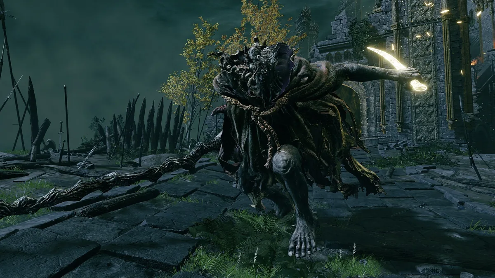

Выбери класс
Стартовый класс задаёт начальные характеристики и снаряжение, но не ограничивает дальнейшее развитие персонажа.
Начни своё путешествие в Междуземье. Освой основы, подготовься к первым боссам и не потеряйся в открытом мире.
Не спеши покорять всё сразу. Несколько простых привычек помогут увереннее освоиться в игре.
Стартовый класс задаёт начальные характеристики и снаряжение, но не ограничивает дальнейшее развитие персонажа.
Активируй места благодати, открывай карту и проверяй пещеры, руины и тропы в поисках полезных предметов.
Следи за выносливостью, учись уклоняться и блокировать, а затем атакуй в безопасные промежутки.
Если враг слишком силён, отступи, исследуй другие места, найди снаряжение и вернись позже.
Все 10 стартовых классов Elden Ring. Выбери стиль, который тебе интересен — любой класс можно развивать по-своему.
Выбери класс, чтобы увидеть плюсы, минусы и что качать.
Понимай, за что отвечает каждая характеристика, и вкладывай очки под свой стиль игры.
Увеличивает запас здоровья и помогает переживать ошибки.
Повышает запас выносливости и допустимую нагрузку экипировки.
Нужна для использования подходящего тяжёлого оружия.
Важна для оружия, которое масштабируется от ловкости.
Необходим для многих видов колдовства.
Используется для заклинаний веры.
Влияет на некоторые эффекты оружия и поиск предметов.
Запас очков концентрации (ОК) для колдовства и молитв.
Это рекомендуемый маршрут, а не обязательная последовательность: открытый мир позволяет исследовать и другие места.
Освой управление, попробуй основные атаки, уклонение и блокирование. Не обязательно побеждать каждого встречного врага.
Найди торговца Кале и посмотри доступные предметы. Покупай то, что действительно пригодится твоему стилю игры.
Отдохни у места благодати — обычно в церкви Элле — и Мелина даст тебе Потока, призрачного коня. С ним быстрее исследовать мир и обходить опасные группы врагов.
Активируй места благодати, изучи карту и следуй по Золотому пути, не забывая осматривать окрестности.
Исследуй окрестности, ищи полезные ресурсы и предметы, но учитывай, что некоторые враги могут оказаться слишком сильными.
Подготовься к встрече с Маргитом и постепенно продвигайся к первому крупному сюжетному испытанию.
Подготовка часто важнее попытки победить с первой минуты. Сделай бой управляемым.

Не торопись идти к боссу сразу после начала игры. Дополнительное исследование, несколько уровней и улучшение оружия могут заметно облегчить сражение.
Следи за полосой выносливости и не атакуй без остановки: оставляй запас на уклонение. Наблюдай за комбинациями Маргита и бей в моменты, когда он заканчивает серию атак.
Если доступны призыв духов и игровые помощники, используй их, чтобы получить передышку и дополнительные возможности для атаки.
Отметь пункты по мере подготовки.
Небольшие привычки, которые помогают проходить игру спокойнее и увереннее.
Активируй благодатиОни помогают ориентироваться и служат важными точками отдыха.
Проверяй боковые путиПещеры и руины часто скрывают полезные предметы и ресурсы.
Планируй траты рунПо возможности повышай уровень или покупай нужные предметы, а не копи без цели.
Следи за нагрузкойВес экипировки влияет на тип переката и подвижность.
Улучшай оружиеПодходящее улучшенное оружие часто полезнее небольшого повышения второстепенной характеристики.
Используй окружениеСкрытность, конь и особенности местности могут дать преимущество.
Возвращайся позжеЕсли противник слишком силён, исследуй другие области и набирайся опыта.
Междуземье не обещает лёгкого пути. Исследуй, учись на ошибках, находи собственный стиль и стань Повелителем Элден.